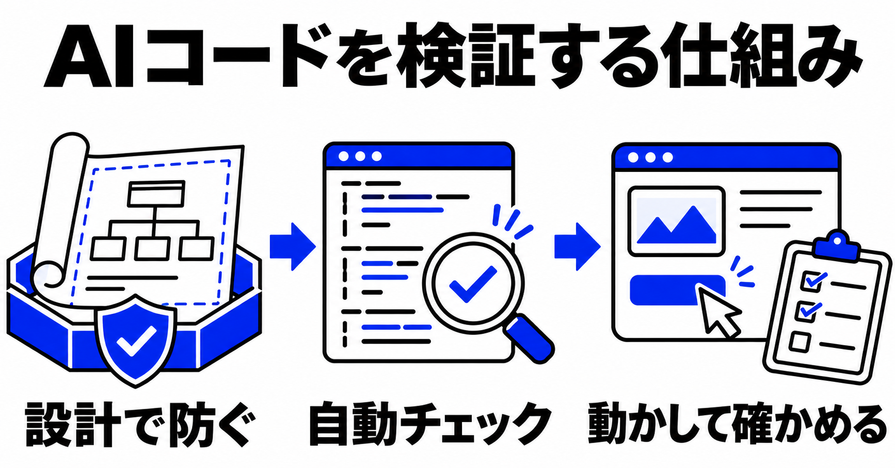
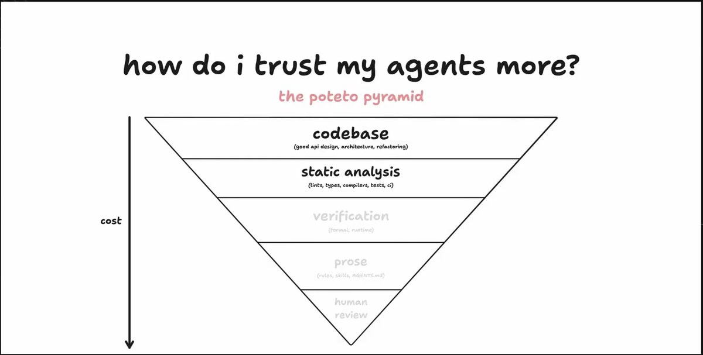
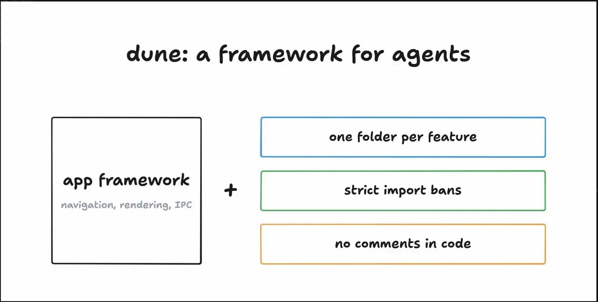
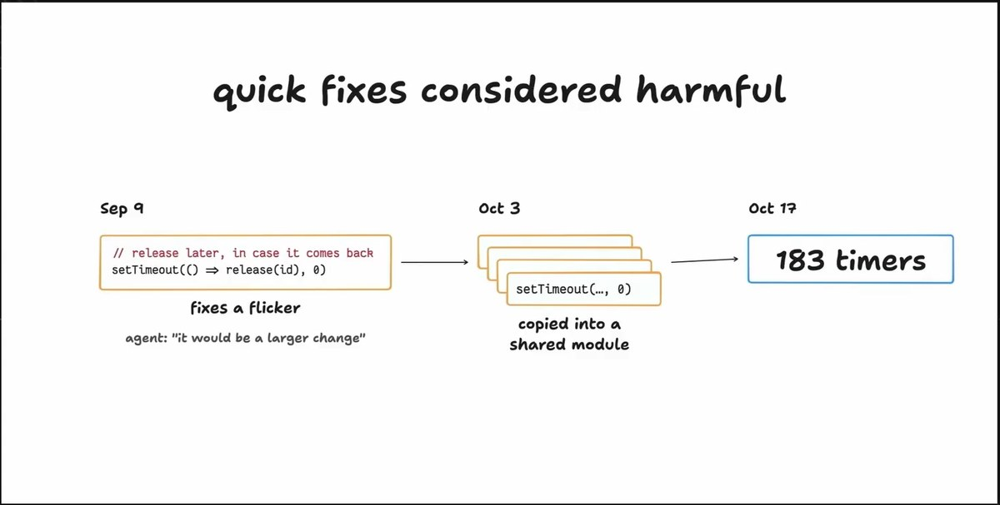
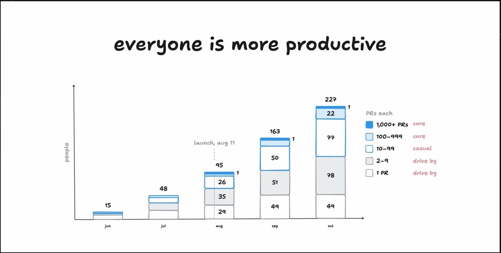

All Code Is Slop (Except Mine)
月11,000 PRを「ゴミ」にしない方法

元動画とスライドを見ながら読む
公式の個別動画を埋め込みます。スライドは下の本文内にある講演キャプチャを参照できます。配布用のスライド単体ファイルは確認できていません。
埋め込みを読み込むとYouTubeへ接続します。自動再生はしません。ボタンが表示されない場合や再生できない場合は元動画を開いてください。
動画の該当箇所：2:07 逆ピラミッド ／ 5:00 Dune ／ 10:36 実行時検証。公式のスライド一覧でも原スライドと時刻を確認できます。

Lauren Tan（poteto）は SpaceXSI の Principal Engineer で、AIチャットアプリ Grok Bot の開発を率いている。講演では、チームが前月に本番へ出したPRは11,000件、本人はそのうち3,000件と報告している。いずれも登壇者の報告値で、この記事で独立に検証した数字ではない。
このページはAI Engineer Code Summit での彼女の講演の要点を、講演で使われたスライドとともにまとめたもの。テーマはエージェントに大量のコードを書かせながら、コードの品質をどう保ち、どう上げるかである。
- エージェントのミスを直すとき、プロンプトに言葉を足すのではなく、lint・型・API設計のような決定論的なチェックに落とし込む。
- 検証（実行・スクリーンショット・形式的検証）にトークンの約7割を使い（Cindy Sridharan の自己申告に本人の実感も一致）、レビューは「検証の成果物を見る仕事」にする。
- 土台が整えば、月11,000 PRでもリバート率は約0.5%。自動化は土台のあと。
1. 問題設定：信頼をどう作るか0:00〜

エージェントの普及で、個人のコード生産量は大きく増えた。それに伴い、エンジニアの仕事の中心は、品質を維持・改善しながら生産性を上げる方法を見つけることに移っている。
彼女はこの課題を「ソフトウェアファクトリー」の問題ではなく、信頼の問題として扱う。対象は盲目的な信頼ではない。エージェントが正しいことをすると信頼できるよう、作業環境そのものに投資する。
彼女がその状態に到達するまでにかかった期間は6か月。ただし、道筋が分かれば短縮できるとしている。
2. 信頼の「potetoピラミッド」2:03〜

図を上から下へ読むと、次の5つの層になる。
- codebase：API設計、アーキテクチャ、リファクタリング
- static analysis：lintルール、型、コンパイラ、テスト、CI
- verification：実行時検証と形式的検証
- prose：ルール文書、skills、AGENTS.md のような文章の指示
- human review：人間のレビュー
下端の人間レビューへ向かうほどコストが高い。設計と自動チェックで同じ誤りを防ぎ、文章の注意書きや人の繰り返し確認に頼りすぎない、という考え方だ。
エージェントの出力は入力で決まる。コードベースはその最大の入力のひとつである。
3. Dune：問題をカテゴリーごと消す5:00〜

以下の制約はこのチームの設計方針で、すべての開発で useEffect やコメントを禁止すべきだという話ではない。
Dune はGrok Bot のために作られたクライアントフレームワークである。彼女はこれを「Electron 版の Next.js」と例える。デスクトップアプリ開発の教訓を、制約と lint ルールとして組み込んでいる。代表例は次の3つ。
- useEffect の禁止：誤用が多く、エージェントも使いこなせない。そのため製品コードでは禁止し、Dune の API 内部でのみ許可した。結果として、この種の問題は発生頻度が下がるのではなく、カテゴリーごと発生しなくなった。
- ディレクトリによる分離：electron-main と electron-renderer を分け、相互の import を依存グラフ解析と lint で禁止した。導入前は、エージェントがメインスレッドのコードをレンダラー側に import し、長時間タスクやカクつきの原因を作っていた。
- コメントの99%禁止：コメントは陳腐化しやすく、読まれず、強制力もない。さらにエージェントはコメントを、正しい実装をしない理由を書く場所として使う傾向がある。



タイマーを多用する場当たり的な修正が共有モジュールにコピーされて広がり、性能が悪化した事例がある。エージェントはその修正を正当化するコメントも書き添えていた。コメント禁止の背景には、この事例がある。
禁止の代わりに用意したのは、根本原因の修正を促す内容のエラーメッセージを出す lint ルールである。
4. 検証にトークンの7割を使う10:10〜

もうひとつの柱が検証である。基本はエージェントにコードを自分で実行させ、Chrome DevTools Protocol 経由で挙動を確認させること。
検証用のスキルには「feature map」が含まれる。これはユーザー視点で見た全機能の地図で、アプリの各部分を共通の語彙で指し示すために使う。検証手順にはカスタムCLIも用意し、毎回同じ手順で実行できるようにして、トークン消費を抑えている。
最近は形式的検証も導入した。TLA+ で通知などの主要フローをモデル検査し、Lean で自作の仮想化ライブラリを証明して、ちらつきやジッターがないことを確認する。UI向けのプロパティベーステストも始めており、Bombadil というライブラリで「常に成り立つ性質」を定義し、UIを自動で操作して反例を探す。すでにUIのバグをいくつか検出している。ただし彼女自身、TLA+ や Lean はまだ実験段階であり、銀の弾丸ではなくピラミッドの層のひとつにすぎないと留保している。
彼女のプラグイン集 pstack には、コードの状態遷移を図に起こす state chart スキルも入っている。レビューで状態の流れを図として確認するために使う。
彼女の見立てでは、形式的検証のような手法自体は新しい技術ではない。以前はコストが高くて実務では使いにくかった手法を、エージェントが安く実行できるようになったことが変化であり、その意味でいまは「テストと検証の黄金期」にあるという。
この結果、コードレビューの対象はコードそのものから、動画・スクリーンショット・図・形式的検証の結果といった検証の成果物へ移った。トークンの約70%を検証に使うという目安は Cindy Sridharan の投稿にある自己申告からの引用で、彼女は自分の使い方とも合っていると述べている。
5. 成果：速度と安定性13:32〜


- チームは先月 11,000件のPR を本番に出し、安定版をほぼ毎日リリースしている
- PRを出す人は6月の15人から10月には227人に増えた。文脈の少ないカジュアルな寄稿者も含まれる
- 登壇者の報告ではPRのリバート率は約0.5%で安定している。後続PRで直した不具合までは数えないため、不具合率とは異なる
- 起動（-39%）、タイピング（中央値-26%、長文-65%）、チャット切替（-44%）など、体感性能も改善した
リリース時には、アプリ全体に対するファズテストも自動で実行される。実際のユーザーのようにアプリを操作してバグを探し、修正PRを作成して自動マージする仕組みである。
この自動化を支えるのが、彼女のいう「outer loop（外側のループ）」である。コネクタやルーティン（定時実行の仕組み）から Cursor のクラウドエージェントを起動し、多数のエージェントを束ねて動かす基盤で、リリース時のファズテストもその上で動く一例である。
土台側の制約が効いているため、PRは初期状態から一定の品質を満たし、深い人間レビューはほとんど不要になっているという。
6. 結論：自動化は土台のあと15:11〜
すべてを自動化する「ソフトウェアファクトリー」を作る前に、まずコードベースを改善すべきだというのが結論である。
内側のコーディングループが slop を出す状態で自動化を進めると、出力される slop の量が増えるだけであり、トークンを大量に消費する高コストな仕組みになる。
先にコードベース・静的解析・実行時検証と形式的検証へ投資しておけば、その上に自動化の仕組みを構築することは比較的容易になる。
用語・ツールの補足
講演に出てくるツールと用語の短い説明。本文を読む前提知識として置く。
ツール・プロダクト
- Grok Bot
- SpaceXSI の AI チャットアプリ。Tan のチームが開発しており、講演の実践の舞台。
- Dune
- Grok Bot のために作られたクライアントフレームワーク。彼女は「Electron 版の Next.js」と例える。制約と lint ルールを内蔵し、誤用されやすいパターンを API の時点で使えなくしている。
- pstack
- Tan のプラグイン集で、GitHub で公開されている。エージェント向けのスキルを集めたもので、状態遷移を図に起こす state chart スキルなどが入る。
- Bombadil
- UI 向けのプロパティベーステストのライブラリ。講演では、成り立つべき性質を定義し、UI を自動で操作して反例を探す実例として登場する。
- TLA+
- システムの仕様を数学的に記述し、モデル検査で不具合を探すための言語。Leslie Lamport が設計した。講演では通知などの主要フローの検証に使う。
- Lean
- 定理証明の支援機能を持つプログラミング言語。証明は機械的に検証される。講演では自作の仮想化ライブラリの証明に使う。
- Chrome DevTools Protocol（CDP）
- Chrome や Chromium ベースのアプリを外部から操作・検査するためのプロトコル。講演では、エージェントがアプリを実行して挙動を確認する実行時検証に使う。
- Electron
- Web 技術でデスクトップアプリを作るフレームワーク。OS 寄りの処理を担う main プロセスと、画面を担う renderer プロセスに分かれる。Dune の import 規則はこの境界を守らせるためのもの。
- useEffect
- React のフックのひとつで、副作用の実行に使う。誤用が多いことで知られ、Dune では製品コードでの使用を禁止している。
- Cursor
- AI コーディングエージェント／エディタ。講演の outer loop では、クラウドエージェントとして起動される側として登場する。
概念・手法
- slop
- 質の低い生成物や粗悪なコードを指す英語の俗語。講演タイトルは「コードは全部 slop、ただし私のは違う」の意味。
- lint / lint ルール
- コードを実行せずに静的解析し、問題のある書き方を検出する仕組みと、その個別ルール。講演では、ミスの修正を落とし込む先の中心になる。
- 静的解析（static analysis）
- lint、型チェック、コンパイラ、依存グラフの解析など、コードを実行せずに検査する手法の総称。ピラミッドの第2層。
- プロパティベーステスト
- 「常に成り立つ性質（プロパティ）」を定義し、大量の入力を自動生成して反例を探すテスト手法。決まった入力例だけを試す単体テストと対になる。
- 形式的検証（formal verification）
- 数学的な証明やモデル検査によって、仕様を満たすことを保証する手法。テストより強い保証が得られる代わりにコストが高い。
- 実行時検証（runtime verification）
- 実際にアプリを動かして挙動を確認する検証。スクリーンショットや動画も検証の成果物になる。
- state chart（状態遷移図）
- 状態と、その間の遷移を図で表す設計手法。レビューで処理の流れを確認するために使う。
- feature map
- ユーザー視点で見たアプリの全機能の地図。検証の手順で、対象を共通の語彙で指し示すために使う。
- outer loop（外側のループ）
- 個別のコーディングエージェントの外側にある基盤。コネクタや定時実行（ルーティン）から多数のエージェントを起動し、束ねて動かす。リリース時のファズテストもその上で動く。
- ファズテスト（ファジング）
- ランダムな操作や異常な入力を大量に与えてバグを探すテスト手法。
- リバート率
- マージされた PR のうち、取り消し（revert）された割合。変更量が増えても品質が保たれているかを見る指標。
自分のプロジェクトに取り入れるには
講演の内容を、自分の開発に持ち帰る形に並べ直したもの。講演の主張の範囲で書いている。
- ミスの直し先を選ぶ。同じミスが起きたら、まず「どの層で止めるか」を決める。API 設計で誤用を表現できなくする、無理なら lint や型で検出する、それも無理ならテストや実行時検証で捕まえる。文章のルール（プロンプトや AGENTS.md）への追記は最後の手段にする。
- 振り返りを文章で終わらせない。作業の振り返りで得た教訓は、散文のメモではなく、lint ルールや CI のチェックのような機械的に効く形に変えて残す。再発防止が仕組みになれば、エージェントが変わっても効き続ける。
- 検証の成果物でレビューする。エージェントに自分の変更を自分で実行させ、スクリーンショット・動画・テスト結果を出させる。人が読むのはコードそのものではなく検証の成果物に寄せると、PR の数が増えても回る。生成より検証にトークンを使う配分も意識する。
- コードベースを庭として手入れする。悪いパターンは残っていると次のエージェントがコピーして広げる。場当たり的な修正を見つけたら、個別に直すだけでなく、パターンごと発生しなくなる形（API の変更や lint 化）に寄せる。
- 小さく始める。土台づくりには彼女でも6か月かかっている。最初の一歩は、よくあるミスを1件選んで lint ルール化すること。決定論的なチェックが1つ増えるごとに、レビューで見るべきものが減っていく。
一次資料
主催者の講演ページ・スライド・文字起こし ／ 主催者の別編集版
元動画：All Code Is Slop (Except Mine) — Lauren Tan（YouTube / AI Engineer）
話題のきっかけ：Alejo（@ecommartinez）の X 投稿／Yarchi（@undefinedKi）の X 投稿（動画付き、約496万回表示）
登壇者：Lauren Tan（@poteto）／ 彼女のプラグイン集 pstack：github.com/cursor/plugins/tree/main/pstack
このページは講演の要点を独自にまとめたもので、逐語の書き起こしではありません。スライド画像は講演動画からのキャプチャです。講演の著作権は登壇者および主催者に帰属します。